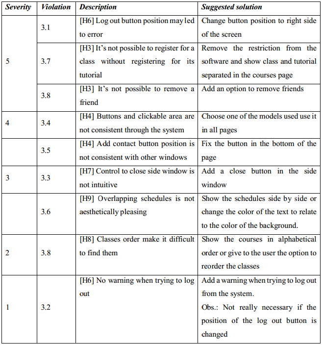

Heuristic Evaluation #3
1. Introduction
UVicSchedule is an application to manage the user’s class schedule in a simple and easy way.
It’s easier to use than the existing methods and allow the users to compare their schedules with their
friend’s schedules.
2. Method
2.1 Heuristics
The software prototype for UVicSchedule was evaluated using Nielsen’s heuristics, that are
listed below:
H1: Visibility of system status
H2: Match between system and real world
H3: User control and freedom
H4: Consistency and standards
H5: Help users recognize, diagnose, recover from errors
H6: Error prevention
H7: Recognition rather than recall
H8: Flexibility and efficiency of use
H9: Aesthetic and minimalist design
H10: Help and documentation
2.2 Severity
The severity of the violation was given according to Nielsen’s scale, that is defined as:
1 = I don’t agree that this is a usability problem at all
2 = Cosmetic problem only: need not be fixed unless extra time is available on project
3 = Minor usability problem: fixing this should be given low priority
4 = Major usability problem: important to fix, so should be given high priority
5 = Usability catastrophe: imperative to fix this before product can be released
3. Findings
3.1. [H6 Error prevention][Severity 5]
- Problem
The log out button is located near the tabs, what can make the user click on it by mistake.
- Severity
To use the app it’s necessary that the user is logged in, so logging out by accident may be very
frustrating and time consuming for the user. Moreover, there is no warning when trying to log out, so
it’s really important to avoid the user from clicking on the log out button by mistake.
- Suggested solution
Move the log out button to another place, such as near the share button in the right side of the
screen.
3.2. [H6 Error prevention][Severity 1]
- Problem
There is no warning when trying to log out, so, if the user click in the log out button by mistake,
he/she has to log in again.
- Severity
By itself this is not a big problem, but contribute to the severity of the previous violation
- Suggested solution
Add a warning when trying to log out from the system.
Obs.: If the previous violation is fixed, it’s not necessary to fix this one.
3.3. [H7 Recognition rather than recall][Severity 3]
- Problem
Closing side window is not something intuitive, it’s necessary to click in the active tab to do it.
In general, clicking in an active tab gives no result, but in the app is the only way to close it.
- Severity
Even though it’s not hard to remember how to do the operation, it doesn’t make good use of
the user’s previous experiences.
- Suggested solution
Add a close button in the side window.
3.4. [H4 Consistency and standards][Severity 4]
- Problem
Buttons and clickable areas are not consistent through different pages of the system. For
example, in general clickable areas are blue (e.g., icons and names), but while user is searching for
courses, clickable areas are defined by a lighter background color and the blue text is used to highlight
selected courses.
- Severity
This problem makes the system harder to use and has an impact in its aesthetic.
- Suggested solution
Choose a standard for buttons and use it in all pages
3.5. [H4 Consistency and standards][Severity 4]
- Problem
In the schedules window, the add contact button is not in a fixed position as the buttons in the
courses window. Moreover, since the cited button is bellow all friends, if the user has many friends
the button may not be visible.
- Severity
The current location of the add contact button is inconsistent with the courses page, and it’s
also a visibility problem.
- Suggested solution
Fix the button in the bottom of the page, such as the search course button in the courses page
3.6. [H9 Aesthetic and minimalist design][Severity 3]
- Problem
When overlapping the schedules, sometimes it’s hard to identify what is the names of the
classes for each student, especially when two classes are in the same time. This is an aesthetic problem.
- Severity
Even though it’s not aesthetically pleasing and a little confusing, it still accomplish it’s
function.
- Suggested solution
Show the schedules side by side or change the color of the text to correspond to the color of
the background.
3.7. [H3 User control and freedom][Severity 5]
- Problem
The system don’t allow the user to register for the class but not for the tutorial, obligating the
user to do something he/she doesn’t want to do.
- Severity
What the system do is not consistent with the rules of the university, where it’s possible to the
students to register only for the class.
- Suggested solution
Remove the restriction from the software and show class and tutorial separated in the courses
page.
3.8. . [H8 Flexibility and efficiency of use][Severity 2]
- Problem
The student’s classes are exhibit in the order they were registered, what make it harder for the
user to find the classes he/she wants in the list.
- Severity
Since a student don’t have many courses, it is not too hard to find a course even if they are not
ordered
- Suggested solution
Show the courses in alphabetical order or give to the user the option to order the classes.
3.9. [H3 User control and freedom][Severity 5]
- Problem
There is not possible in the system to remove friends.
- Severity
When two users become friend they can see each other schedule, but if they want to stop sharing
they cannot.
- Suggested solution
Add an option to remove friends.
Summary of findings

« Back